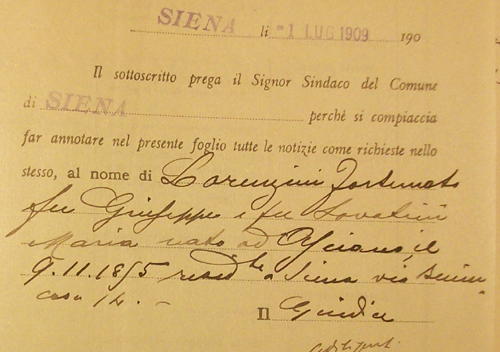
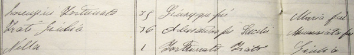
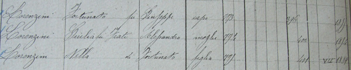

|
(Dannato) 0/8 Nato ad Asciano (SI) il 9 novembre 1855 Morto a Siena il 27 luglio 1924 (altre notizie) Emigrato da Murlo a Siena (via Salicotto 116) il 3 giugno 1888 
1 Palio alla Romana.  
  Stato delle Anime del 1890 - via Salicotto  Censimento del 1901 - via Salicotto 116 La mattina del 30 giugno (1888) mentre si eseguiva la prova della carriera alla tonda in Piazza Vittorio Emanuele, il suddetto Lorenzini come fantino della contrada
della Giraffa, il cavallo anziché girare in tondo alla Piazza si diresse seco la via di S.Martino e cadde cavallo e cavaliere il quale ultimo si produsse la distrazione descritta nell'accluso referto medico.  (Archivio di Stato di Siena - Procuratore Regio 327) 
 |